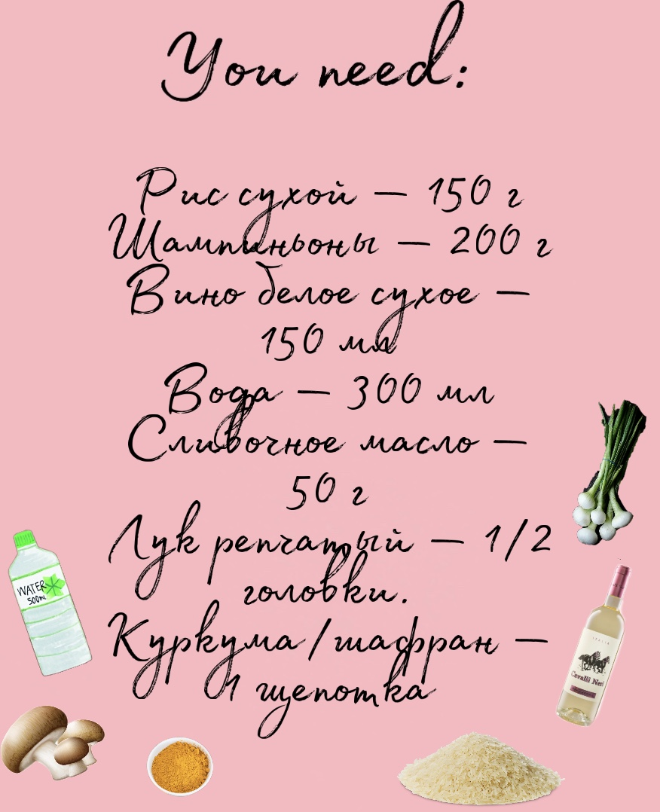
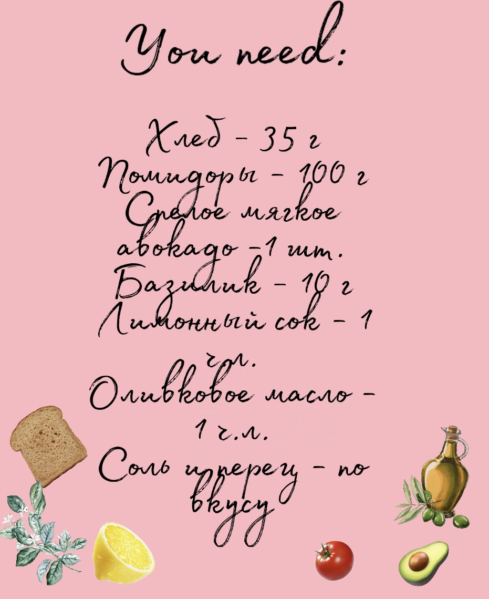

Основные блюда

Ризотто
- Мелко нарезаем и обжариваем лук на сливочном масле. Добавляем нарезанные шампиньоны и обжариваем их до тех пор, пока они не выпустят воду. Можно немного посолить.
- Добавляем рис и жарим пару минут. Заливаем смесь вином и водой. Варим без крышки на среднем огне, постоянно помешивая, 15-25 минут (зависит от сорта риса).
- Добавляем щепотку приправы, когда вино и вода выпарятся наполовину.
- Варим до полного приготовления риса. Если жидкость выпарится слишком рано, добавьте еще воды и вина в пропорции 2:1.s
Брускетта
- Нарезаем хлеб на ломтики. Подсушиваем его на сухой сковороде с двух сторон до золотистой корочки (можно сделать в тостере).
- Нарезаем на кубики помидоры, можно убрать сердцевину с семенами, чтобы начинка не была слишком влажной. Мелко рубим базилик, смешиваем с помидорами, добавляем к смеси чайную ложку оливкового масла, лимонный сок (давим лимон). По вкусу добавляем соль и перец
- Разрезаем пополам авокадо, удаляем косточку. Ложкой достаем мякоть, разминаем в мисочке вилкой и перекладываем на хлеб. Можно мякоть немного посолить по вкусу. Сверху выкладываем смесь из помидор и базилика
